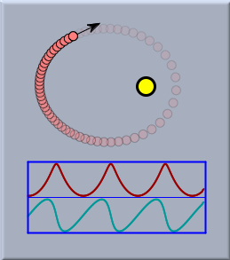
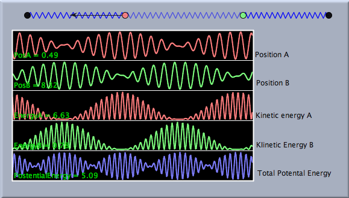
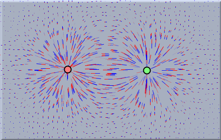
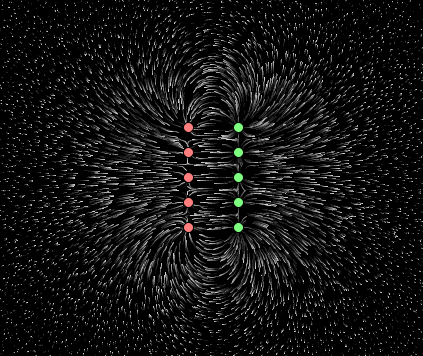
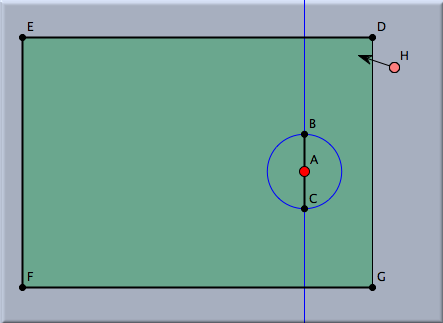
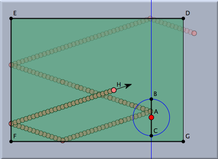
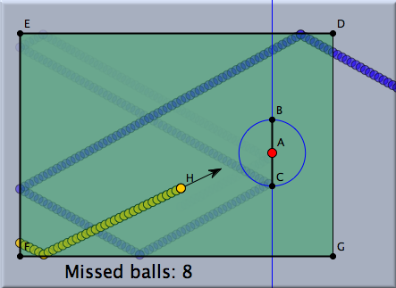

drawcurves(position,list_of_values) generates a region in the geometric view in which the development of magnitudes can be shown. Here position is the position at which the oscilloscope is drawn and list_of_values is a CindyScript list that contains several magnitudes to be represented graphically. The simplest use of this operator is presented by the following program:drawcurves((0,0),[B.x,B.y])
 |
| Curved plots of planetary motion |
drawcurves(...) operator supports many different modifiers that can be usedto set background colors, curve colors, display texts, as well as many additional parameters for drawings. You will find a detailed description in the CindyScript reference manual. The picture below shows the use of the drawcurves operator applied to a coupled harmonic oscillator. |
| The movement of a coupled oscillator |
linecolor((1,1,1));
drawcurves((-7,-3),
textcolor((1,1,1)); (A.x,B.x,A.ke,B.ke,a.pe+b.pe+c.pe),
height->50,
color->(1,1,1),
back->(0,0,0),
backalpha->1,showranges->true,
range->"peek",width->400,
colors->[
[1,0.5,0.5],
[0.5,1,0.5],
[1,0.5,0.5],
[0.5,1,0.5],
[0.5,0.5,1]],
texts->[
"PosA = "+ A.x,
"PosB = "+B.x,
"EnergyA = "+A.ke,
"EnergyB = "+B.ke,
"PotentialEnergy = "+(a.pe+b.pe+c.pe)
]);
drawforces operator. With this operator one can visualize the direction and strength of forces all over the drawing area. To accomplish this, a virtual probe particle moves across the screen, measuring the forces at different points. If one simply writes in CindyScript the linedrawforces()
drawforces() operator causes the following flux picture: |
| A simple electrostatic field |
drawcurves() operator, the drawforces() operator supports many modifiers. They are explained in detail in the CindyScript reference. Here we just present a slightly more advanced example. |
| Another simple electrostatic field |
drawforces(stream->true,
color->(1,1,1),
factor->3,
resolution->5)
stream->true statement replaces the usual display of force fields with small needles with little streamlets that give a more accurate picture of the flux. |  |
|
| Construction of a table tennis game | A lost ball |
if(H.x>D.x+9,.... If this happens, a new point with random position, random speed, and random color is inserted at the end of the table. In addition, a counter is used to count how many balls have been lost.if(H.x>D.x+9, H.x=F.x; r=random(); H.y=(r*D.y+(1-r)*G.y); w=random()*pi/2+3*pi/4; H.vx=-cos(w)*.4; H.vy=sin(w)*.4; H.color=(hue(random())); count=count+1; ); drawtext((-1,-3),"Missed balls: "+count,size->20);
count=0;
 |
| Scripting the table tennis game |
Page last modified on Sunday 04 of September, 2011 [18:32:10 UTC].
The original document is available at
http://doc.cinderella.de/tiki-index.php?page=Scripting%20Physical%20Environments